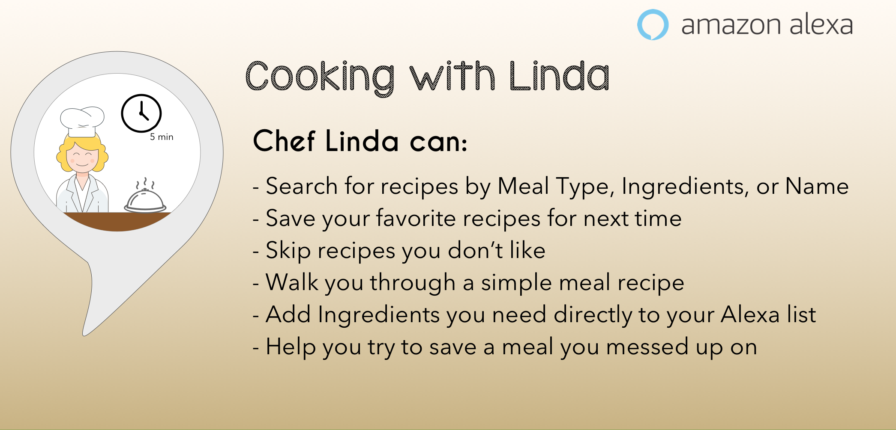
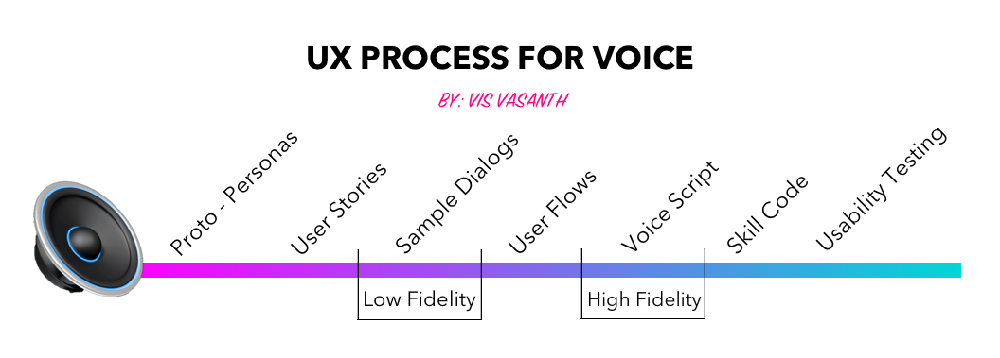

UX DESIGN FOR VOICE (Alexa):
COOKING WITH LINDA
The Cooking with Linda (Alexa skill) was designed to walk users through delicious quick and easy 5 minute recipes.
The Problem
I discovered that people (especially young professionals) had difficulty finding time to cook healthy meals. The resulting prototype is an initial hypothesis on how I hope to solve the problem.


After distilling the competitive research and understanding my persona's needs, motivations, and daily activities, I created user stories to identify key features of the skill. Next, I went on to create low-fidelity dialogs (Sample Dialogs) followed by high fidelity dialogs (Voice Script). I then put my dialogs through usability testing to uncover areas that need improvements and areas that contribute to a great experience.
KEY DELIVERABLES:
Personas, User Stories, User Flows, Voice Script, Skill Code, Usability Test Plan, Usability ReportProto-Persona
I began with the creation of a user persona, which allowed me to better understand our user's needs, motivations, and wants. When designing for voice, best practice is to not only make user personas for our users, but also for our voice system. Creating a system persona allowed me to give my voice UI a personality of her own and a more realistic feel for my users.
User Persona

System Persona

Intents & Slots
Being able to deconstruct a skill's anatomy helped me create better voice interactions. Identifying sample utterances, intents, and slots were crucial to building out the Alexa skill using A.S.K.
- INTENTS are things the skill can do for the user.
- UTTERANCES are what the user says to activate the intent.
- SLOTS are items you can use as part of your intent.

Low Fidelity:
User Stories & Sample Dialogs
Creating user stories helped me analyze what tasks my users wanted to do as well as what features users will find useful. To create the most optimal voice interaction, I had to take into account the environment where my users would use the Alexa skill. Most often, the skill would be used in the kitchen.
Sample Dialogs can be thought of as low-fidelity dialogs. They are the basics of the interaction and can be thought of as a snippet like a movie trailer. I picked out the most important user stories and created sample dialogs for them. This helped me jot down the key interactions that our users will have.


User Flows
The user flow is an important piece as it shows the architecture of the voice experience. Creating the user flow allowed me to map out and understand how all my various intents were related and how the system responded to different inputs. Remember, intents are things the skill can do for the user.


Voice Scripts
The script is a list of all the prompts and responses for the voice UI. My voice script accounted for the happy path dialog as well as when the user encountered errors. I used Excel (common practice) to assign each intent a tab. Utterances, prompts, responses, and error handling dialog were then documented for the appropriate intents.


Skill Code - A.S.K. and Lambda
When building out the Alexa Skill, I used the Alexa Skills Kit(Speech Recognition and NLU component) and Lambda (Dialog Management & Response). You can think of A.S.K. as handling all the voice inputs and Lambda as hosting the logic and handling the output.
In A.S.K, I created my skill with its intents, slots, and utterances. I then added my javascript logic code to Lamda in order to handle the system output. The last step was configuring my skill in A.S.K. to my code in Lambda.
Usability Test Report
Creating a usability test plan for Cooking with Linda allowed for seamless usability testing with 5 paticipants. I conducted the testing via the Wizard of Oz method. Participants were asked pre/post task questions and were also asked to complete the following 3 tasks:
- Finding & Preparing a Recipe by Meal Type
- Choosing a Recipe By Ingredient
- Choosing a Recipe By Name


Lessons Learned
An important lesson I learned from this project is that regardless of what interface you are designing for (ie. mobile, voice, desktop, car), user research and usability testing is crucial to creating a meaningful experience for users.
Even though we were designing an Alexa skill, I still included user research and usability testing to really give me insight into how to improve my skill.